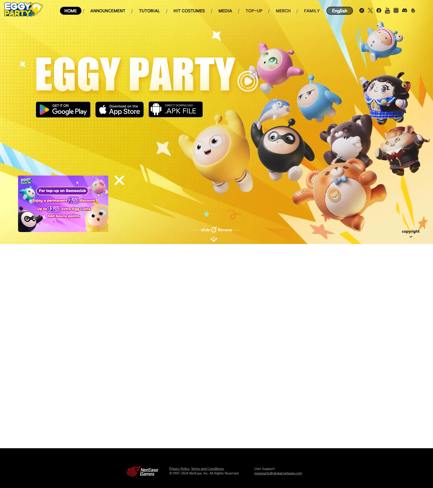

网易旗舰休闲竞技手游，累计注册超 5 亿，UGC 地图创作生态为核心驱动力。
想象一片永恒欢乐的蛋仔宇宙 Eggyverse——一片没有时间线、没有黑夜、不会真正受伤的色彩斑斓派对世界。主舞台是漂浮在云海中的蛋仔岛 Eggy Island——糖果色山丘、棉花糖云、果冻海滩之间散落着弹射器、旋转锤、传送带、蜜糖陷阱、大风扇、巨型保龄球等玩具化机关。整座岛由蛋仔工坊 UGC持续扩张——你下一秒踩进的关卡可能是某位中国玩家昨晚才搭出的奇思妙想。
本作没有主角和反派——你扮演一颗会蹦跳的蛋形角色 Eggy，圆滚滚没有手脚却能滚跳推抓。每场派对最多 32 颗蛋仔同台，按巅峰对决/团队竞技/休闲玩法/工坊地图分流。网易把问卷调研嵌进日常运营——你今天玩到的新模式很可能源自某次中国 7-15 岁玩家票选。蛋仔的真正特殊性在于它不是单机，而是放学后默认的社交平台——同班同学连麦组队，比 QQ 群还热闹。
那次你领先一步即将冲线、却被旋转锤一甩飞回起点的瞬间，网易把派对游戏做成中国 7-15 岁孩子的童年坐标——你玩的不是游戏，是「滚下平台时还能笑出声」这道反内卷快乐主义；那场你和好友连麦在蛋仔广场互相贴贴拍照的桥段——蛋仔捏脸 + 皮肤让你明白「派对的核心从来不是赢，而是和谁一起摔倒」；那次你进入某位陌生工坊作者搭的奇葩关卡笑到肚子疼的时刻，UGC 强生态让蛋仔从一款游戏变成了一个文化现象。这不是关于打败别人的故事，是「你下一次摔下平台时，是更想笑出来，还是想再来一局」？
糖果色玩具乐园 × UGC 社交派对，是网易把潮流玩具盲盒美学（圆润蛋形、马卡龙糖果色、Q 弹手感、蛋仔捏脸自定义）和儿童游乐园机关玩具传统（弹射器、旋转锤、传送带、蜜糖陷阱）以及移动端社交派对界面（连麦小窗、表情贴贴、广场聚会、工坊编辑器）三层缝合在32 人派对竞技外壳里的混血美学。底色是糖豆人 × 中国潮玩盲盒双重血统；变异在于把 UGC 关卡编辑器做成日常入口——蛋仔工坊本身就是一座永远长大的乐园。
「派对乐园 + 玩具机关 + UGC 社交」视觉线跨越百年。1955 年迪士尼加州迪士尼乐园开园定义现代主题乐园糖果色机关美学母版。1989 年日本电视综艺《Takeshi's Castle 风云！武铁城》定义巨型机关闯关综艺范式——蛋仔派对赛的精神祖父。2003 年任天堂《超级马里奥派对》把派对游戏做成主机国民玩法。2009 年Roblox把 UGC 关卡库做成欧美儿童社交平台母版。2017 年泡泡玛特Molly 盲盒把潮流玩具盲盒做成中国年轻人收藏母版。2020 年Mediatonic《糖豆人 Fall Guys》定义现代派对大逃杀品类母版——蛋仔最直接对标作品。2022 年《蛋仔派对》全平台公测+网易问卷调研驱动迭代。2023 年蛋仔派对 DAU 破 4000 万——把派对游戏推到中国 7-15 岁国民级现象。
基于体验清单 · 审美偏好 · IP故事三维度综合选出